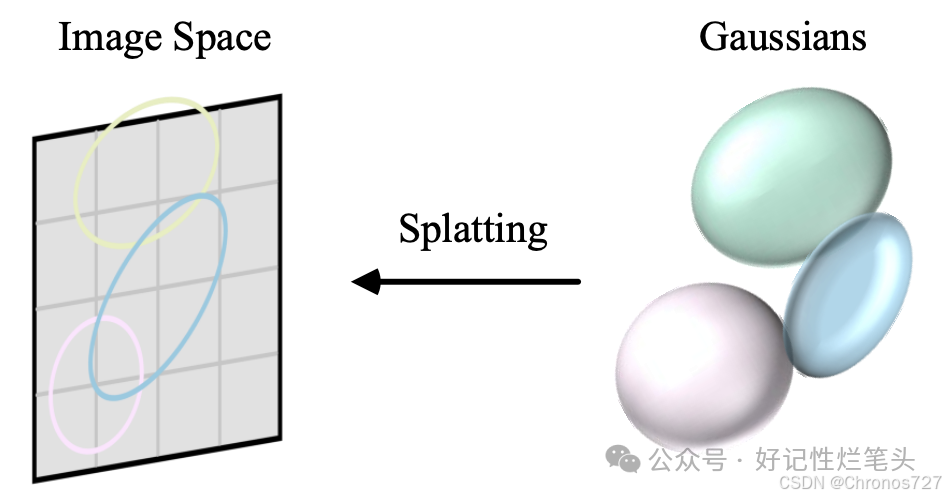
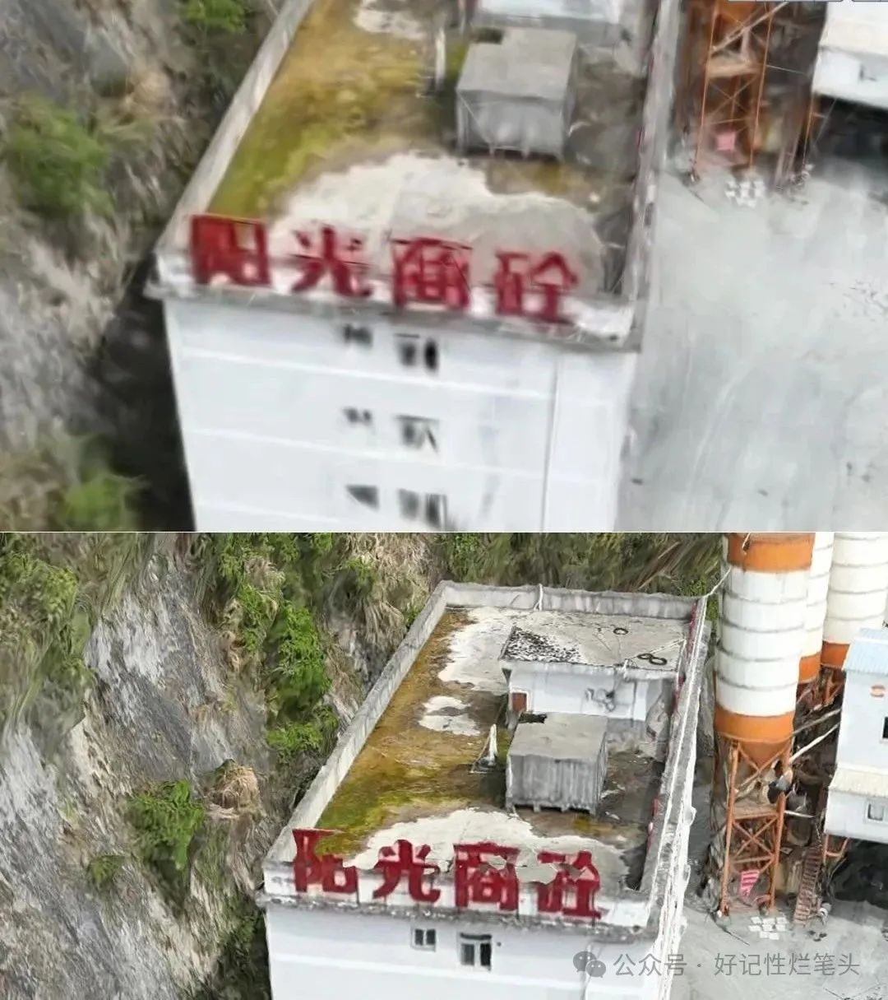

三维建模 / 高斯泼溅 3DGS
高级泼溅 3DGS 笔记
一、3DGS 简介
3D 高斯泼溅（3D Gaussian Splatting，3DGS）用一组三维高斯基元近似场景几何与外观。它属于隐式几何表达：更强调点与点的关系，而非只记录离散点位。
相较传统点云或体素，高斯函数连续性更好（减轻锯齿与空洞），且可微，便于优化，能更好表达几何与外观。
二、与点云建模流程对比
二者大体都是：数据采集 → 数据处理 → 建模 → 导出。差别主要在数据处理。3DGS 可用图像、点云、深度图等，但通常先得到点云，再转为高斯点，所需数据量往往更少。
高斯初始化是关键步骤，常用 Open3D、COLMAP 等工具。
| 环节 | 点云建模 | 高斯泼溅 |
|---|---|---|
| 数据采集 | 激光扫描 | 多视角拍摄 / 激光扫描 / 视频等 |
| 数据处理 | 点云预处理 | 以 SfM 等提取稀疏点云 |
| 建模 | 分割分类，转三角网格，再优化 | 高斯初始化与参数优化；可微光栅化实时渲染（可 >30 FPS） |
| 应用 | 导出常用三维格式 | 渲染后可导出模型/点云/引擎格式；未渲染仅能导出高斯参数 |
三、优缺点对照
| 维度 | 点云建模 | 3DGS |
|---|---|---|
| 数据量 | 完整扫描，数据量大 | 多源生成高斯点，量级可约到传统点云的 1/10 |
| 处理 | 相对复杂 | 按高斯分布处理，速度较快 |
| 细节 | 精度高，几何细节好 | 几何细节能力有限 |
| 渲染 | 一般不强调实时 | 单场景可实时渲染 |
| 兼容性 | 与成熟三维软件兼容好 | 导出后再进其他软件处理 |
| 场景规模 | 适合大规模可视化 | 难支撑 >2 km² 地理场景及 Web 端三维渲染 |
| 硬件 | 显存/内存要求相对略低（文中：内存至少约 32GB） | 要求高：CUDA GPU，内存至少约 128GB |
| 优势 | 高精度高保真几何 | 光线散射、半透明等误差较小 |
| 落地 | 技术成熟、后处理丰富 | 实际工程案例仍偏少 |

笔记插图 1

笔记插图 2：3DGS 与 Mesh 效果对比（上为 3DGS）。连续性较好，但数据量受限时清晰度可能不足。
小结
若不考虑导出后在其他软件中重建大场景，数据采集、处理与最终效果都要按项目需求与设备条件取舍。新兴技术有优势，成熟路径也仍有竞争力。
参考：[1] 浅浅地了解一下高斯泼溅3DGS（嗮嗮 / 好记性烂笔头）